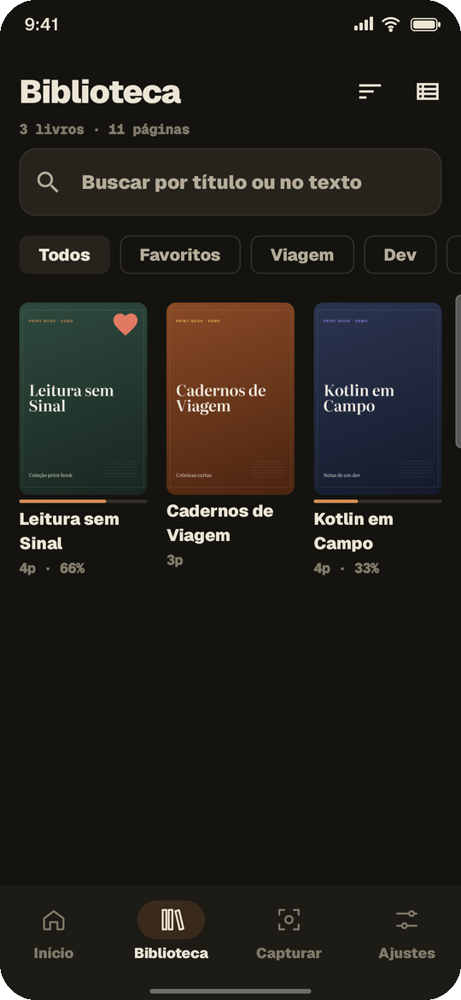

Guarde o que importa. Leia onde estiver.
Veja o print-book guardando
Escolha o que guardar. A bolha flutua sobre o app em que você está, um toque captura a página e ela já entra organizada na sua biblioteca.
Guardar leva só um toque
Você continua no app em que está. O print-book trabalha numa bolha discreta por cima dele.
Abra o conteúdo
Em qualquer app que permita captura de tela: o leitor, o navegador, o PDF.
Toque na bolha
A página é guardada na hora. No modo semiautomático, é só ir virando: o app captura sozinho quando a tela para.
Leia e encontre
Tudo organizado em coleções, com busca pelo texto e leitura confortável, mesmo offline.

Encontre qualquer palavra, em qualquer página
O texto das suas capturas é reconhecido no próprio aparelho, sem internet. Digite "aproximacao" e o print-book encontra "aproximação".
- Busca em todas as coleções ou em uma só
- Ignora acentos e maiúsculas
- Vai direto à página do resultado

Coleções do seu jeito
Cada captura vira um print-book com capa, progresso e lugar certo na sua biblioteca.
- Coleções, favoritos e marcadores
- Capa da galeria ou de uma página
- Revise e exclua uma captura ruim na hora

Feito para ler, não só para guardar
A interface se recolhe para dar espaço ao conteúdo, e você retoma de onde parou.
- Zoom por pinça e duplo toque
- Modos noturno, sépia e escurecido
- Prévia da página ao arrastar a barra de progresso
O que é seu fica com você
Tudo fica no seu aparelho: sem conta, sem servidor e sem nuvem. As capturas ficam dentro do app, fora da galeria, e podem ser apagadas a qualquer momento.
O print-book é um organizador pessoal para conteúdos aos quais você já tem acesso. Ele guarda apenas o que aparece na sua tela, respeita os apps que bloqueiam captura e não contorna nenhuma proteção.
Não deixe passar um conteúdo especial.
O print-book está chegando à Google Play. Dúvidas, sugestões ou parcerias: digitalbr316@gmail.com.